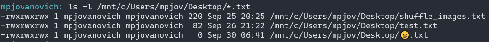

Since computers only have binary to work with, we encode text by assigning characters to numbers in a lookup table. This is called a character set.
Recall that text is made up of characters: letters, numbers, and symbols.
The American Standard Code for Information Interchange (ASCII) is a character set that uses 7 bits to represent 128 characters. It was developed in the 1960s and is still in use today.
Unicode Transformation Format, or just Unicode, was developed to address the limitations of ASCII. It has several encoding schemes, the most common being UTF-8 (Unicode Transformation Format).
UTF-8 uses 8 bits to represent characters. Other schemes use 16 or 32 bits.
Example:
Open a web page and view the source code.
<meta charset="UTF-8" />Languages
Latin: A, B, C, ..., Z, a, b, c, ..., z
Greek: α, β, γ, ..., ω
Cyrillic: А, Б, В, ..., Я
Hebrew: א, ב, ג, ..., ת
Arabic: ا, ب, ج, ..., ي
Symbols
©, ®, ™, €, £, ¥, ¢, etc.
Math
∞, ∑, √, π, etc.
Emoji

Oddballs
Whitespace characters are an easy-to-miss source of computer errors. They include the space, tabs, carriage return, and line feed.
One example is Python, which uses indentation to define code blocks. If you mix tabs and spaces, you will get an error.
if True:
print("Hello")
print("World")
All text editors should have a way to show whitespace characters. In
notepad++ try going to
View > Show Symbol > Show All Characters.
Try dropping the snippet above and looking at the characters.
Although everything is stored as binary, we can categorize files as either text or binary.
Text files are human-readable and can be opened in a text editor.
Binary files are not human-readable and must be opened in a program that understands the file format. These files may or may not contain text. E.g. Microsoft Word files are binary files. Try opening one in a text editor.
We can use the xxd program in bash to view the contents
of a file in binary and hexadecimal.
# View a text file in binary
xxd -b some_file.txt
# View a text file in hexadecimal
xxd some_file.txtNow that we know more about how text is encoded, let's look at an application.
A checksum is calculated by adding the bytes in a message and storing the result in a separate byte. Useful for checking small amount of data.
A digest is a fixed-size string that represents the contents of a file. The function used to calculate the digest is called a hash function. Useful for checking larger amounts of data.
# We create an awesome program, and host it on our website:
echo "Hey, I'm the file." > testGood.exe
# We provide a checksum and MD5 digest for users to verify the
# file's integrity:
sum testGood.exe # Checksum
md5sum testGood.exe # MD5 digest
# Bad actor changes the file and distributes it, from a
# malicious copycat site, pretending it's authentic:
echo "I've come to ruin your computer." > testBad.exe
# Our friend downloads the file and checks the checksum
# to make sure it's the same as the original. She sees that
# the sums don't match the original, and knows she has bad files:
sum testBad.exe # Checksum
md5sum testBad.exe # MD5 digest